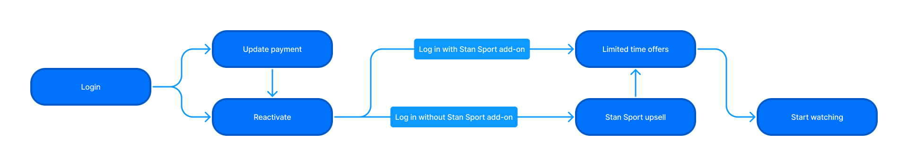
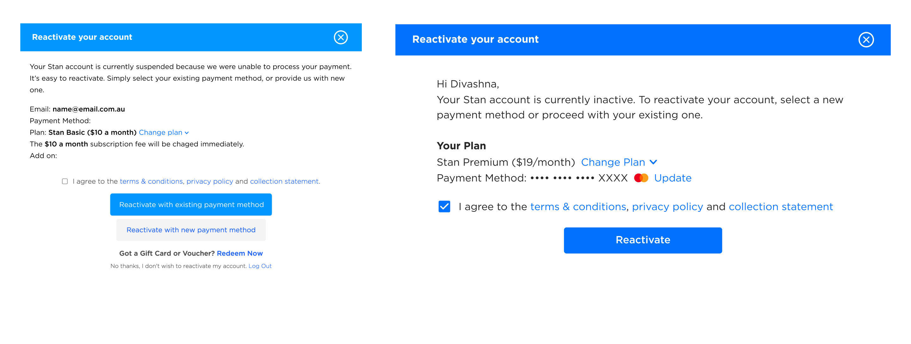

Reactivation Flow
Increasing retention rates one A/B test at a time
Context
Given a large percentage of users who sign up to Stan are returning customers, the reactivation flow must be reviewed to ensure users are following through with the process.
My Role
Status COMPLETE
The overwhelming success of this project has inspired stakeholders to continue to build on its success and apply similar methodologies to future projects and prospects.
Objective
The business problem that was assigned was simple: Simplify the reactivation process for returning users to reduce drop-off rates during reactivation, thereby increasing retention. From a user perspective, the aim was to reduce the complexity and frustration associated with re-enabling a Stan subscription.
Problems
To better understand the issues surrounding reactivation, I conducted an audit of the existing user flow. Three key issues emerged:
1. Cluttered UI
2. Use of CTAs
3. Mobile experience
Opportunities
These insights revealed numerous opportunities for improvement which were discussed with key stakeholders before being concepted and implemented. The changes that would be addressed in the redesigns included:
Reducing cognitive load by condensing copy, thus reducing the time and complexity involved with reactivating one's account
Focussing on a mobile-first experience, as they account for a large volume of reactivations
Providing clearer feedback and offering a consistent experience for users with a Stan Sport add-on
Proposing a New Flow
The next step was to visualise a new and improved reactivation user flow. I started by mapping the existing flow to understand the key steps involved in the reactivation process.
Immediately, I was able visualise how the reactivation flow could be simplified to ensure users who previously purchased a Stan Sport add-on and those without would encounter a single, consistent reactivation experience. I was also able to identify steps that could be combined to deliver a smooth and efficient user experience for customers. With this in mind, I crafted the new user flow.
The new user flow I proposed simplified the reactivation process for all returning Stan customers. A clean, consistent and quicker reactivation flow would allow users to achieve their objective- to reactivate their plan- with minimal distraction and, therefore, encourage them to complete the process. Payment updates had also been integrated in the reactivation step for simplicity and ease of use.
Designs
New designs for the reactivation flow followed. After multiple rounds of feedback from internal product managers and my trusty design team, I finalised the designs. Once approved, I defined the specifications of each design, which involved setting up new components in the UI library, and paired with a frontend engineer to bring them to life.
Testing the Variants
It was time to put the new designs to test using multivariate testing software. Multivariate testing revealed that the new designs were favoured over the existing interface. This, in turn, had a positive effect on retention, as users were evidently more likely to follow through with a reactivation process that reduced the number of clicks involved with reactivating an account while removing interface clutter.
A Successful Outcome
The new solution that had been designed and tested resulted in an uptick in reactivation numbers, thereby meeting the business's objective of increasing reactivation while providing a streamlined reactivation experience for customers. The new designs have been rolled out on web, ranging from a compact mobile view to an extra-large desktop display.